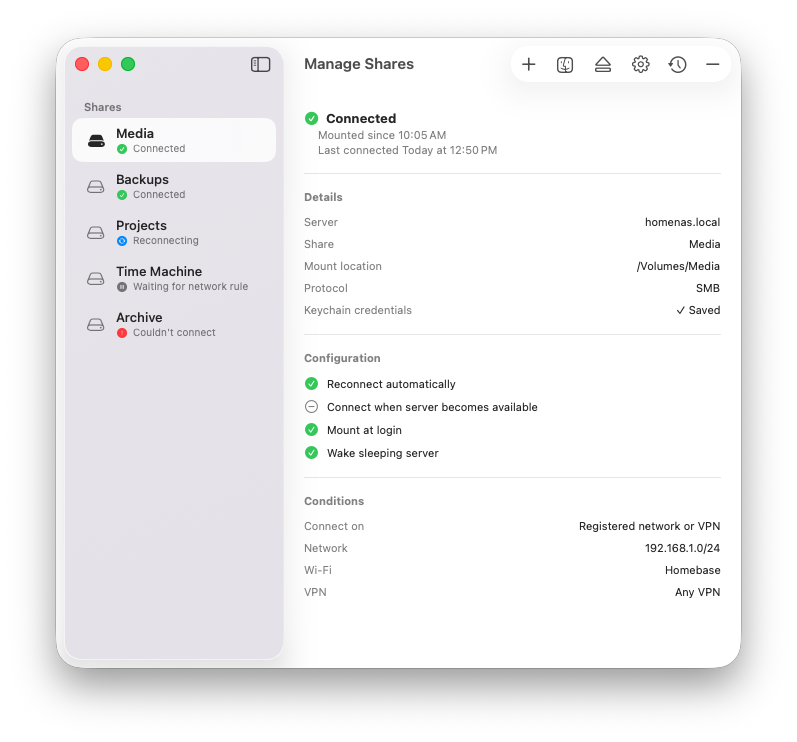
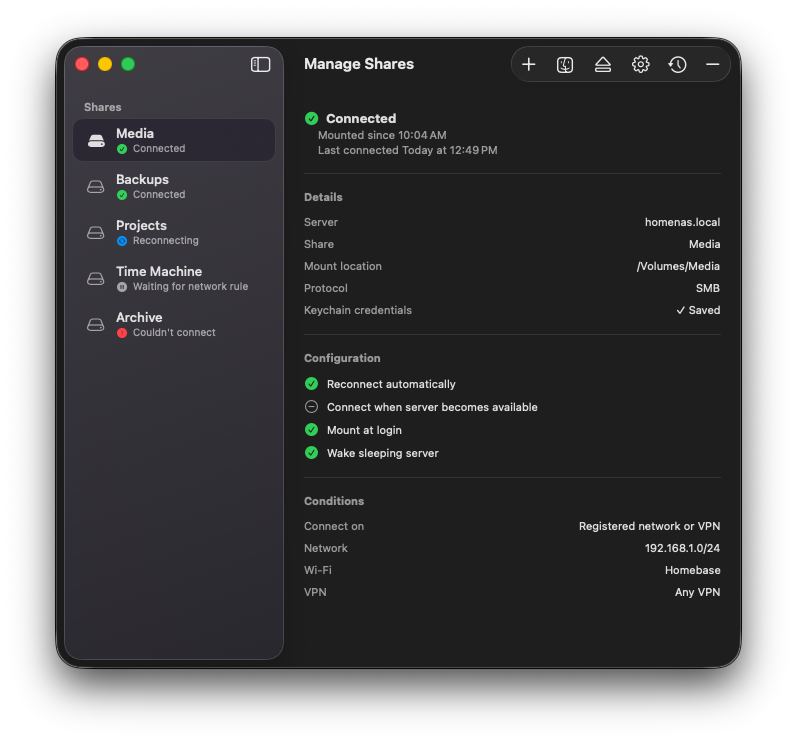

Home storage that stays mounted
Keep photos, media libraries, family backups, and Finder shares available after your Mac sleeps or switches Wi-Fi.
Otter quietly watches SMB shares for home users, small businesses, and home labs, reconnecting them after sleep, network changes, VPN reconnects, and unexpected disconnects.
Native, lightweight, and open source. Built for family NAS setups, office file shares, media servers, and backup volumes.


Built for the small macOS moments that break shared storage: sleep, wake, Wi-Fi hops, VPN timing, and slow NAS or server wakeups.
Keep photos, media libraries, family backups, and Finder shares available after your Mac sleeps or switches Wi-Fi.
Use per-share rules for trusted networks and VPNs so business folders reconnect only where they should.
Wake sleeping servers, retry slow mounts, and keep NAS volumes ready for Plex, automation, and backup jobs.
A Launch Agent can mount a simple share at login, but keeping SMB shares reliable on a Mac usually means handling sleep, wake, Wi-Fi changes, VPN timing, server reachability, and useful status. Otter wraps that work in a native app instead of a pile of scripts.
Free, open source, and built for the Macs that rely on home storage, office shares, and home lab servers. Download the latest release when it is available.
Get Otter